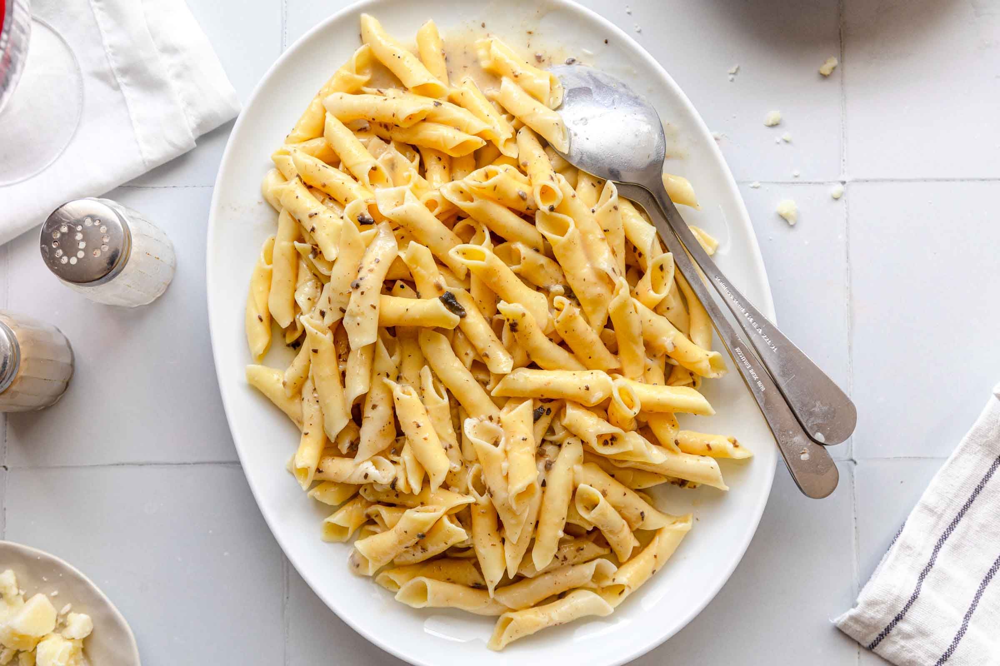

Fuži

Descriotion
Fuži is a traditional pasta of Istria region, in Croatia and Slovenia. The pasta dough is rolled out into a thin sheet, cut into strips three to four centimetres wide, and placed over each other.
It is usually served with a local version of goulash, a mild red veal sauce, which is usually made out of onions, tomato paste, white wine and broth. Common variations include rooster sauce or game sauce, such as boar or rabbit.
Ingredients
- 350 g sharp flour
- 2 eggs
- 1 tablespoon of olive oil
- 2 tablespoons of white wine
- salt
Steps
- Sieve the flour on a board, make a well in the middle, add eggs, oil, wine and salt and knead a firm dough with a little water.
- Roll out the dough thinly, cut into strips 3-4 centimeters wide, and then into squares (the same at a distance of 3-4 centimeters).
- Shape the joints by folding the opposite ends of each square over each other and pressing them with your finger so that they adhere well to each other.
- Spread them on a floured board and let them dry a little.
- Boil the fuži in hot, salted water.